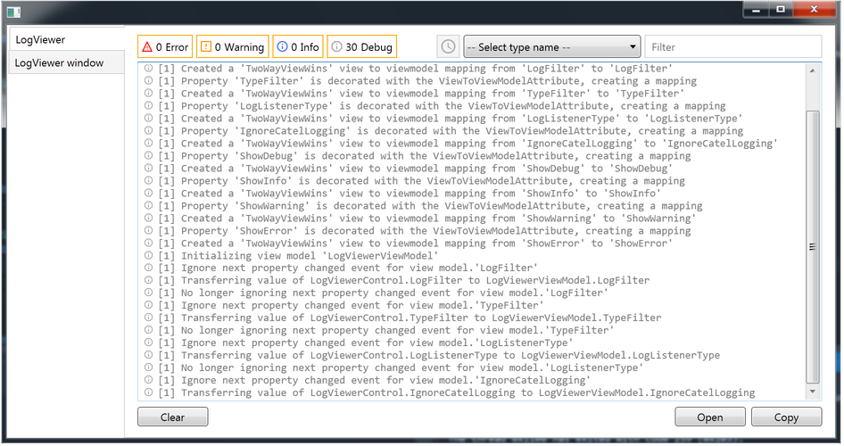
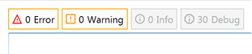
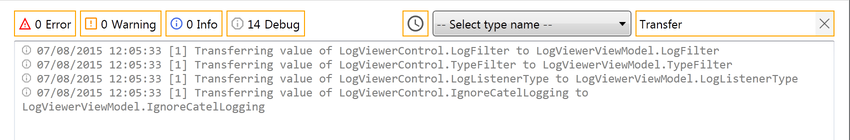
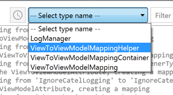
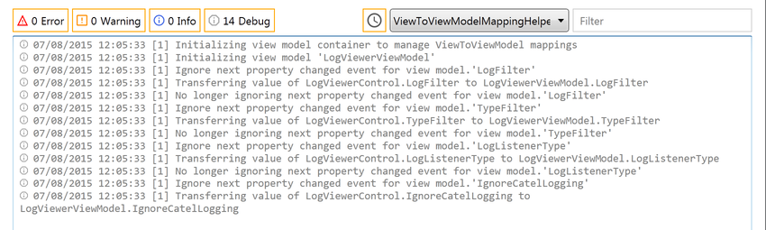
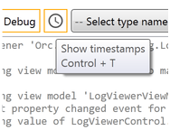

Find the source at https://github.com/WildGums/Orc.LogViewer.
| Chat |  |
| Downloads |  |
| Stable version |  |
| Unstable version |  |
An advanced log viewer for WPF applications.
Run the demo project to see the control in action:

Use level toggle buttons to show/hide log records:

Start typing in filter box to filter log records:

Select a type name in combobox to filter log records by type name:


Use Time stamp toggle button to show/hide timestamps:

How to use LogViewer
Here are the main properties, which are used to configure the LogViewer control:
Filtering:
Level=> The log records types which will be shown.LogListenerType=> Type. The log listener type.IgnoreCatelLogging=> boolean. Ignore Catel logging if true.
Visualisation:
ShowFilterBox=> boolean. Show Filter box if true.ShowTypeNames=> boolean. Show Type names combobox if true.AccentColorBrush=> Brush. The accent color.
<orc:AdvancedLogViewerControl AccentColorBrush="Orange" />